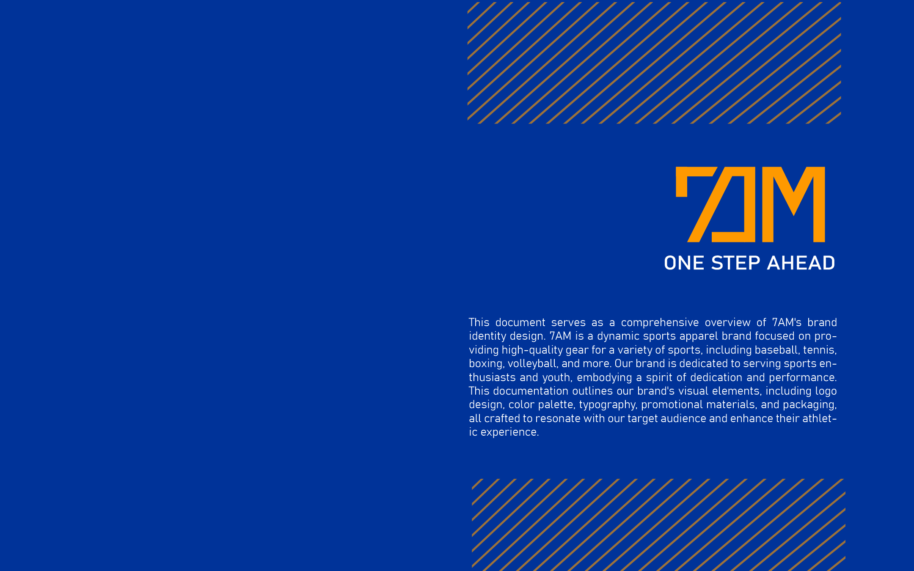
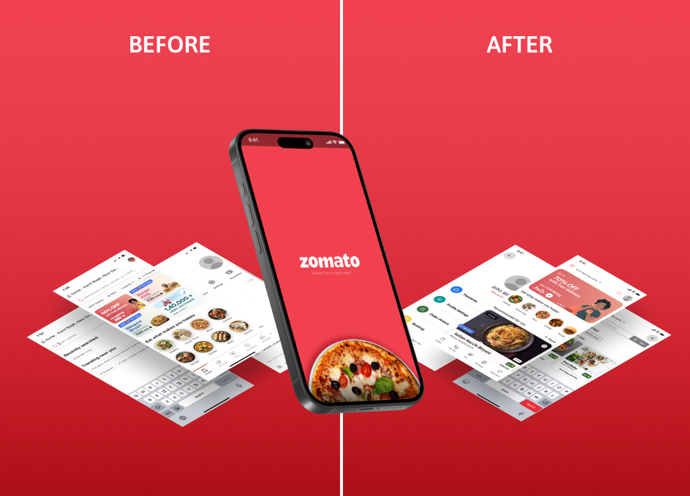

This 3 projects are based of Branches of Graphic Desiging Such as
. 7AM is a dynamic sports apparel brand focused on pro- viding high-quality gear for a variety of sports, including baseball, tennis, boxing, volleyball, and more.
Zomato enhanced its user experience by improving filters, button responsiveness, and decluttering the home screen, aiming to boost customer engagement and satisfaction.
3 Different reels from Three different brands.
© Rishikesh Vishwakarma. All Copyrights are Reserved.